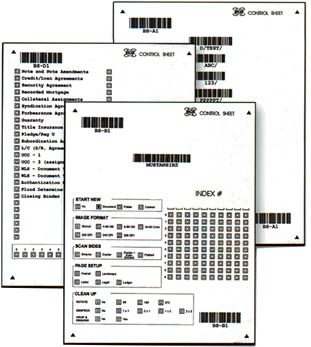
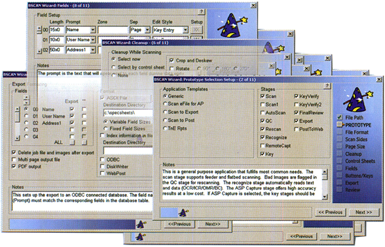

Control Sheets BSCAN control sheets allow users to select the scanning application, the scanner settings, image processing, document separation and auto-indexing. While these settings can be made by the scan operator, the control sheet allow the scanner operator to focus on maximizing throughput and quality. Hours of document preparation can be quickly reviewed before scanning to eliminate errors.
 When they can be used, the barcodes on the control sheets are the most efficient and accurate way to index the images scanned. For example, with backfile con- versions, basic information about each file folder is usually in a database. By creating a list file of that basic information, sorted in the order the folders are stored in the cabinets, BSCAN can print a control sheet for each folder that will automatically index that folder if it is placed at the start of the start of the document pages in the folder. During document preparation, the next page in the stack of folder control sheets should always match the folder pulled from the cabinet to be prepared for scanning.
Also, while scanning or as post-process, the scan station can perform image processing functions such as Rotation, Crop & Deskew, Despeckle, Border Removal, Blank Page Deletion and Color Dropout.
Place application selection control sheets on top of each batch of pages to be scanned to ensure that documents are not scanned into the wrong application.
General Purpose Control SheetSet scanner parameters, select image format, turn image processing such as rotation on and off, identify the start of new documents and folders and attach database records to the pages following these general purpose control sheets. They also contain a 10 digit mark sense field for specifying field values during document preparation.
Document Type Control SheetUse these control sheet to separate documents and identify document type. Print control sheet with all common document types and BSCAN will apply the text or code of the marked document type to the document following the control sheet. By including a special type: [] Other and space for hand printing the document code and name, only the most common document separator sheets need be printed, reducing the number of control sheet bins for the various document types.
Image Processing Image Processing can be performed on each image as it is scanned or after scanning. In addition to the usual image processing functions such as rotate, crop and deskew, despeckle and border removal, tests can be enabled that automatically check for signs of bad images such as text dropout and a high degree of skew. Images are automatically flagged for review and reprocessing without a scanner or when necessary, for rescanning.
Rescan During QC, if it is determined that rescanning is needed, such as when a page was scanned with the corner folder, rhe image can be flagged for rescan. During the Rescan stage, each flagged image is presented for rescan with information displayed to help locate the original page.
Forms Processing OCR, Barcode Recognition, ICR and Mark Sense are performed here to automatically recognize and extract data from forms. The captured data is then populated into user specified fields for review/correction. High speed correction of suspect characters can be performed to improve accuracy.
Key Entry Key entry can be performed on a separate BSCAN-DE station or on the BSCAN scan station with extra licensing. Key-key verify and auto-zoom by field are some of BSCAN's many data entry capabilities.
Review and Correct At this stage captured data can be reviewed and corrected.
Release After scanning, cleanup and indexing, BSCAN can release images and index information to third-party imaging software, directly to SQL server, to a directory structure or to an ASCII file. BSCAN Standard can create a selection of PDF file formats while scanning.
PRODUCTION CAPTURE
BSCAN Standard constitutes a stand-alone capture system or the scanning stage in a multi-stage capture system. BSCAN Standard is available in four capacities: Personal, Low, Medium and High Volume.
BSCAN's powerful customization are among its greatest assets. Build sophisticated workflows with custom screens, commands, key entry windows, mouse-based image processing functions and more.
BSCAN's user-friendly controls offer multiple, pre-defined screen layouts to choose from, with maximum image clarity for easy QC, or, for maximum efficiency user interfaces, build your own custom screen layouts that support only the functions you choose.
Setup Wizard
With BSCAN's Wizard, setting up a simple, single scan and release station or a complex workflow system with unlimited stations is a snap. Select from a list of sample capture workflow templates or build several of your own. The Wizard will walk you through a step-by-step configuration process. Conversion bureaus can build their own special tricks into BSCAN applications and install them as workflow templates that can used to set up new projects.
Project Administration
BSCAN's multiple-project administration facilities are ideal for Conversion Bureaus. Easily navigate through applications and stages. Set up automatic application selection kists for automatic processing as well as manual stations.
Automated processing PCs work unattended, checking an unlimited number of project for work to do. Manual processing stations can automatically check for unfinished work, showing only the work for which a given worker is authorized.